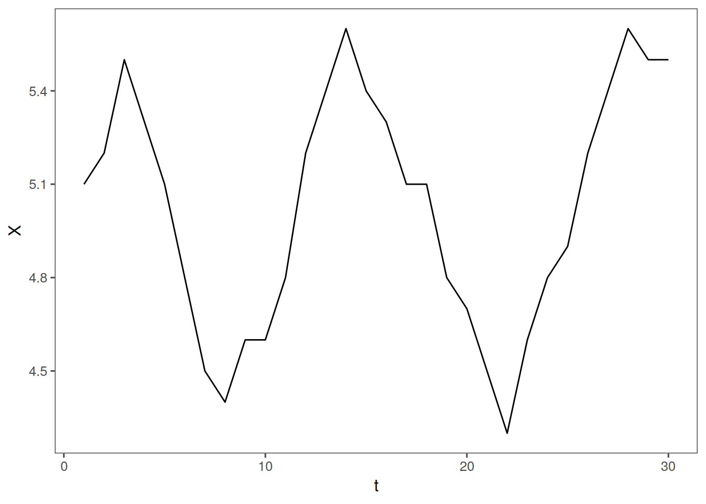
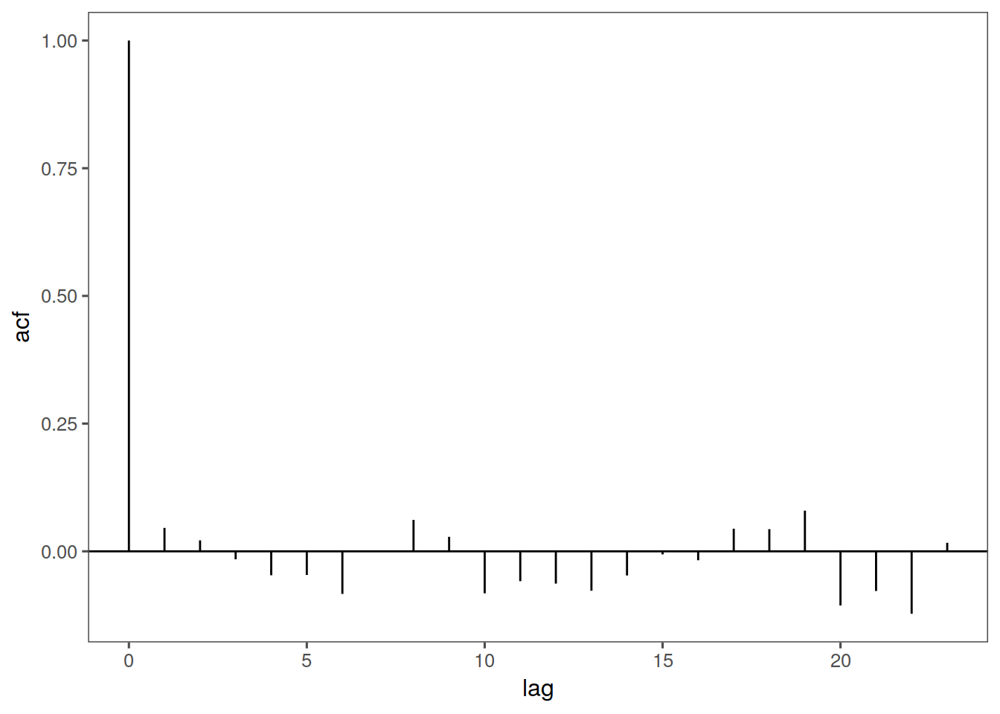

Unit 4 Autocorrelation
library(tswge)
library(ggplot2)
acfdf <- function(vec) {
vacf <- acf(vec, plot = F)
with(vacf, data.frame(lag, acf))
}
ggacf <- function(vec) {
ac <- acfdf(vec)
ggplot(data = ac, aes(x = lag, y = acf)) + geom_hline(aes(yintercept = 0)) +
geom_segment(mapping = aes(xend = lag, yend = 0))
}
tplot <- function(vec) {
df <- data.frame(X = vec, t = seq_along(vec))
ggplot(data = df, aes(x = t, y = X)) + geom_line()
}4.1 Independence
Two events are independent in a time series if the probability that an event at time t occurs in no way depends on the ocurrence of any event in the past or affects any event in the future. Mathematically, this is written as:
\[\mathrm{Independence: }P \left(x_{t+1}|X_t\right) = P\left(X_{t+1}\right)\]
4.2 Serial Dependence / Autocorrelation
4.2.1 A definition
If two events are independent, their corellation is 0 That is if \(X_t\) and \(X_{t+k}\) are independent, \(\rho_{x_{t},x_{t+k}}=0\)
Corollary: If the correlation between two variables is not zero, then they are not independent
In other words if \(\rho_{x_{t},x_{t+k}} \neq 0\), they are not independent.
4.2.2 Autocorrelation Plots
4.2.3 Dependent(ish) data
In time series we look at the autocorrelation between \(X_t\) and \(X_{t+1}\) etc (with t and t+1 it is lag 1 autocorrelation)
For example, visually, let us define a vector, \(Y5\) and take its autocorrelation:
Y5 <- c(5.1, 5.2, 5.5, 5.3, 5.1, 4.8, 4.5, 4.4, 4.6, 4.6, 4.8, 5.2, 5.4, 5.6,
5.4, 5.3, 5.1, 5.1, 4.8, 4.7, 4.5, 4.3, 4.6, 4.8, 4.9, 5.2, 5.4, 5.6, 5.5,
5.5)
tplot(Y5) + ggthemes::theme_few()
ggacf(Y5) + ggthemes::theme_few()
4.2.4 Independent(ish) data!
Now let us look at autocorrelation of independent data
xs = gen.arma.wge(n = 250)Let’s check it out
tplot(xs) + ggthemes::theme_few()
ggacf(xs) + ggthemes::theme_few()
We see that the autocorrelation is more or less zero